Simplified lattice plotting by adding additional elements to existing plots.
ladd(x, data = NULL, ..., plot = trellis.last.object())
| x | callable graphical element to be added to a panel or panels in a lattice plot |
|---|---|
| data | a list containing objects that can be referred to in |
| ... | additional arguments passed to |
| plot | a lattice plot to add to. Defaults to previous lattice plot. |
a trellis object
ladd is a wrapper around latticeExtra::layer() that simplifies
certain common plotting additions. The same caveats that apply to that function
apply here as well. In particular, ladd uses non-standard evaluation.
For this reason care must be taken if trying to use ladd within other functions
and the use of data may be required to pass information into the environment
in which x will be evaluated.
p <- xyplot(rnorm(100) ~rnorm(100)) print(p)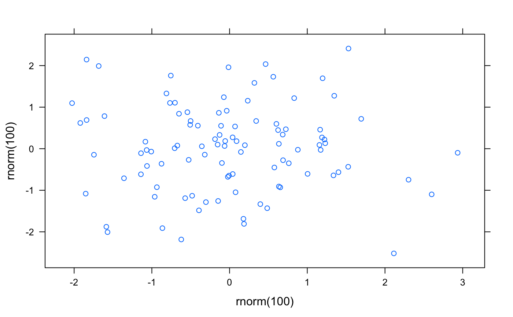ladd(panel.abline(a=0,b=1))ladd(panel.abline(h=0,col='blue'))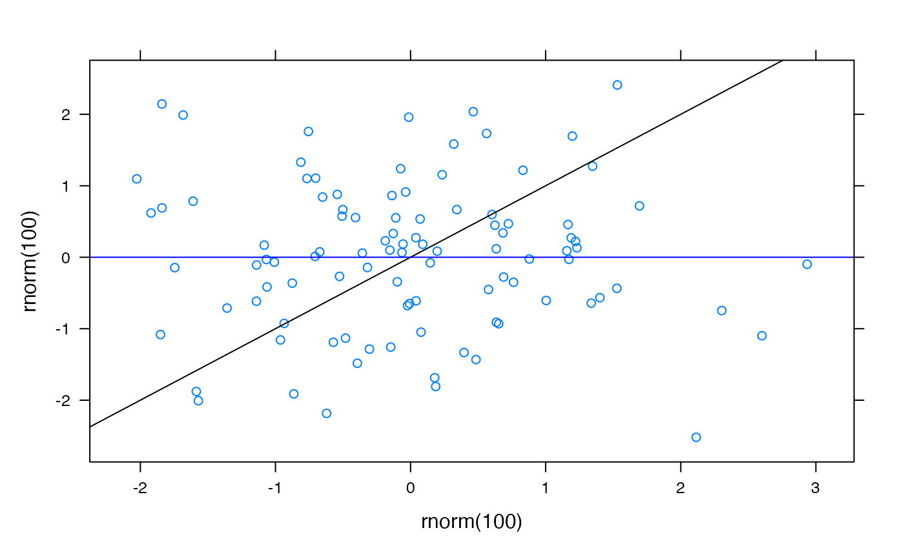ladd(grid.text('Hello'))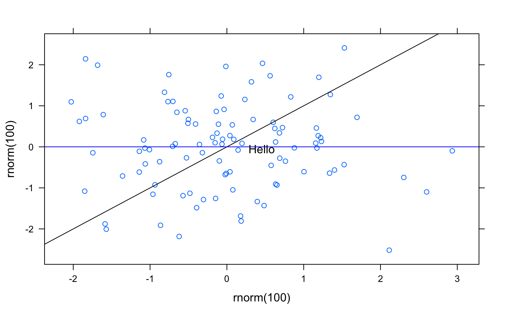ladd(grid.text(x=.95,y=.05,'text here',just=c('right','bottom')))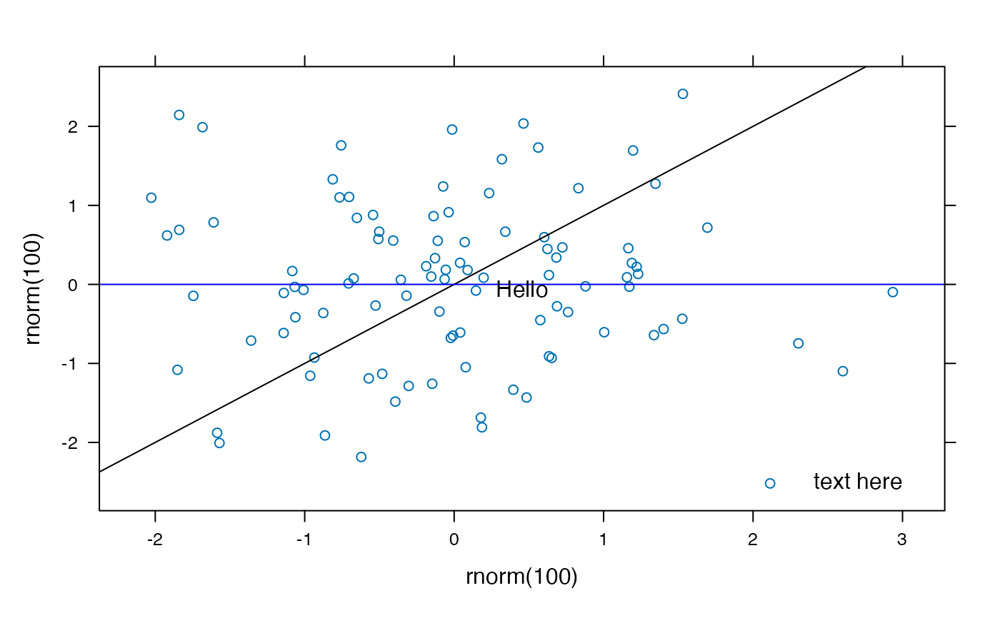q <- xyplot(rnorm(100) ~rnorm(100)|factor(rbinom(100,4,.5))) q <- update(q, layout=c(3,2)) ladd(panel.abline(a=0,b=1), plot=q)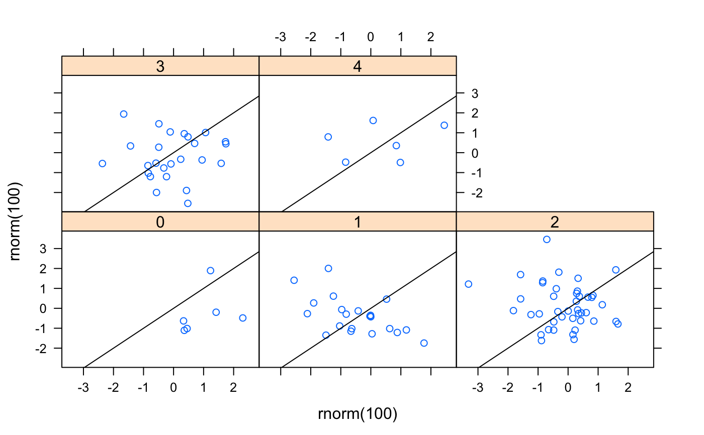ladd(panel.abline(h=0,col='blue'))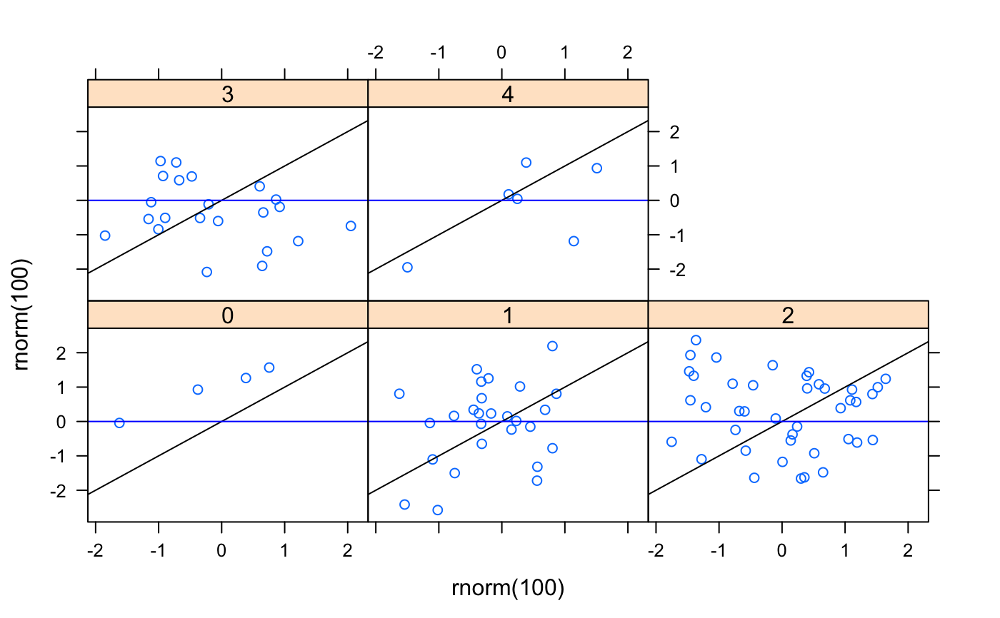ladd( grid.text("(2,1)",gp=gpar(cex=3,alpha=.5)), columns=2, rows=1)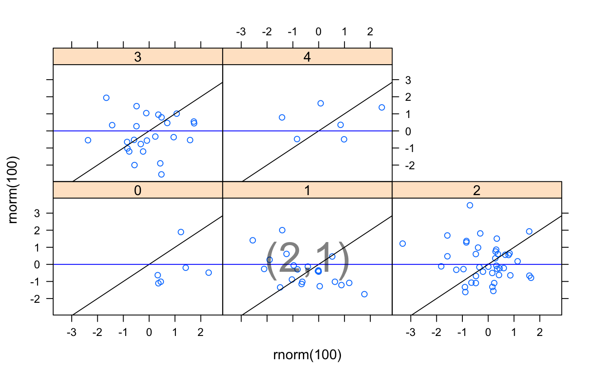ladd( grid.text("p5",gp=gpar(cex=3,alpha=.5)), packets=5)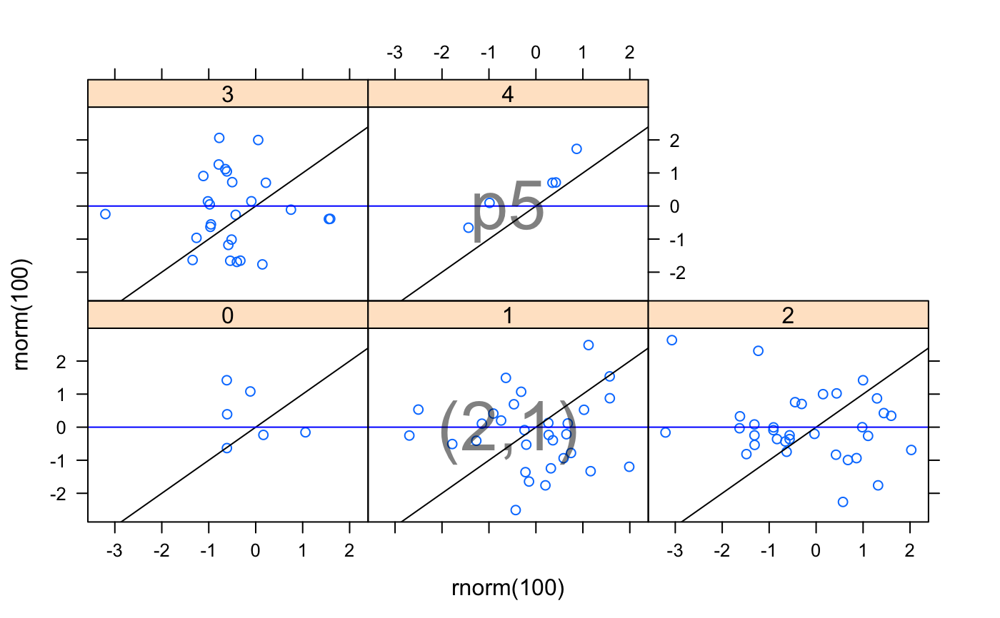q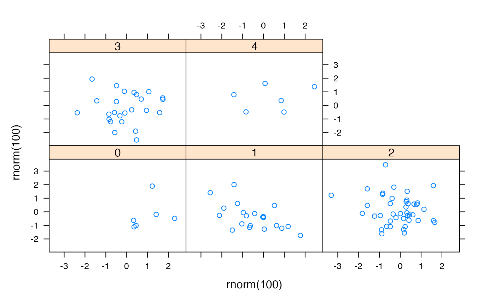ladd( grid.text(paste(current.column(), current.row(),sep=','), gp=gpar(cex=3,alpha=.5)) )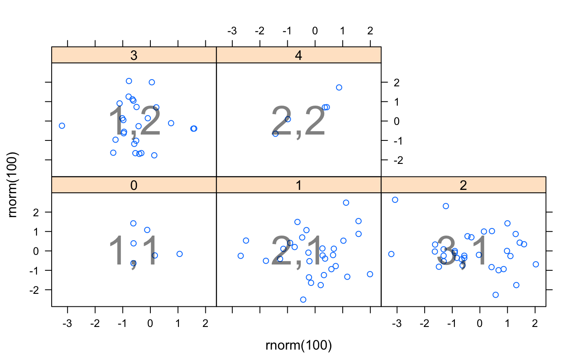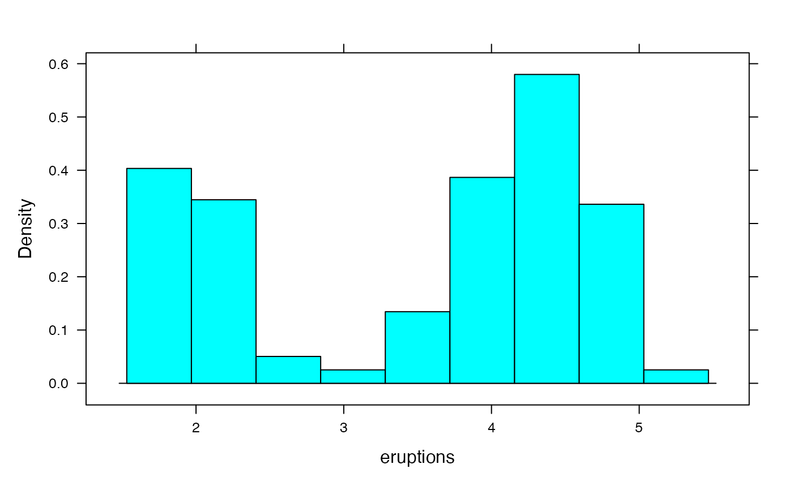# over would probably be better here, but the demonstrates what under=TRUE does. ladd(panel.densityplot(faithful$eruptions, lwd=4), under=TRUE)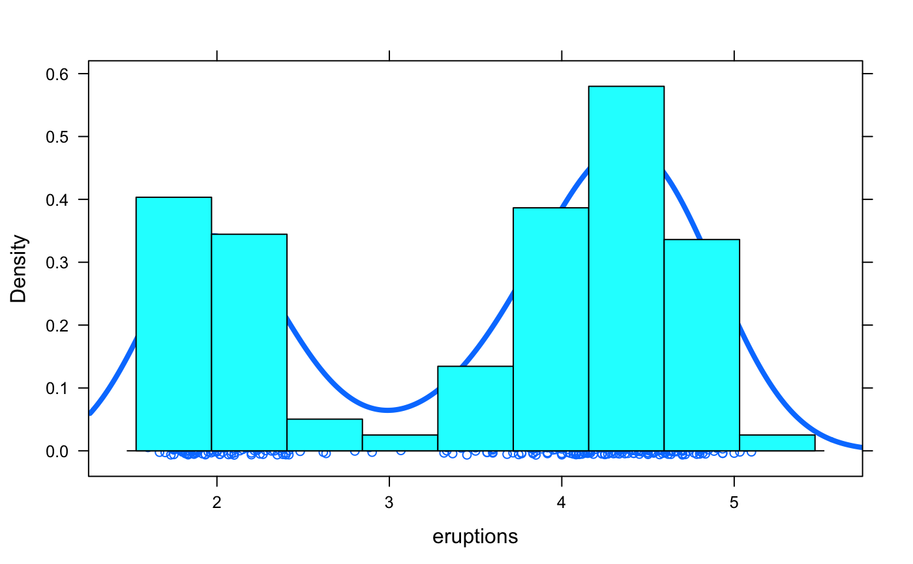